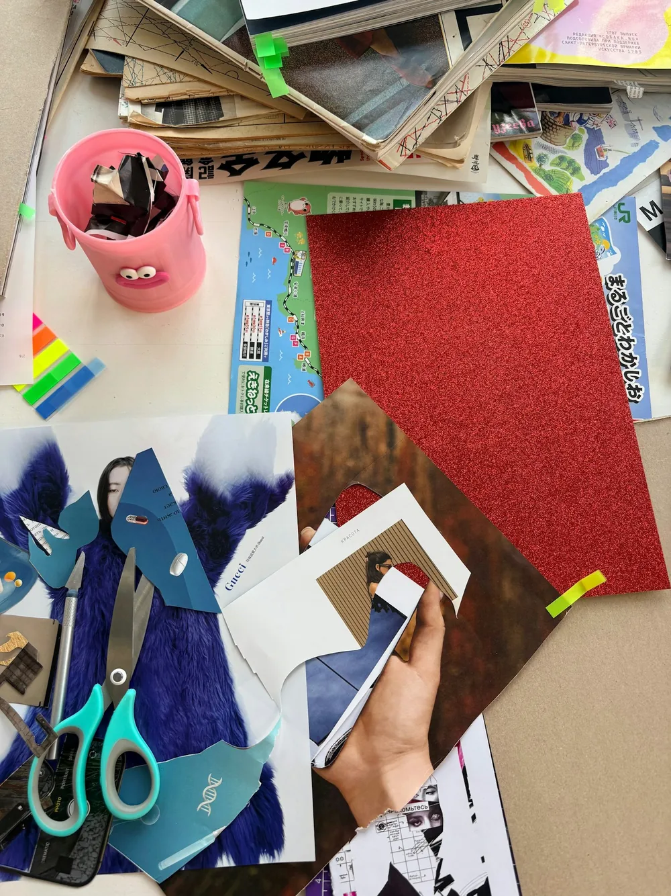

Psicoterapia
Acompanha, ao longo do tempo, sofrimentos, relações, escolhas e modos de viver. Objetivos são construídos e revistos em diálogo.
Entender a psicoterapiaConteúdo público de apoio
Encontre uma resposta direta, prepare perguntas e organize reflexões para conversar no atendimento — sem respostas automáticas e sem substituir a relação com o psicólogo.
Você não precisa conhecer a organização do portal. Escolha abaixo a necessidade que mais se aproxima do que procura agora.
Escolha um caminho
Imagens para situar a reflexão
Objetos, percursos e materiais ajudam a lembrar que compreender uma experiência pode envolver escrita, tempo, relações e diferentes formas de expressão.
Organizar o que importa
Anotar tópicos pode ajudar a chegar à conversa com mais clareza, sem a obrigação de produzir um relato completo.
Ver um roteiro de preparação Foto: Clay Banks / UnsplashReconhecer percursos
Histórias ganham sentido em camadas, relações e condições concretas — não como uma linha reta ou uma resposta única.
Conhecer a perspectiva histórico-cultural Foto: @seelean / Unsplash
Experimentar linguagens
Palavras, desenho, colagem e outros registros podem apoiar uma reflexão quando combinam com o seu momento.
Explorar reflexões guiadas Foto: Tasha Kostyuk / UnsplashUm mapa inicial
Nem toda procura exige o mesmo tipo de processo. A conversa inicial ajuda a verificar o que é tecnicamente adequado.
Acompanha, ao longo do tempo, sofrimentos, relações, escolhas e modos de viver. Objetivos são construídos e revistos em diálogo.
Entender a psicoterapiaInvestiga uma questão delimitada por meio de um processo planejado, reunindo diferentes fontes para apoiar uma conclusão responsável.
Conhecer o processoÉ uma modalidade de avaliação psicológica voltada às relações entre funções cognitivas, aspectos emocionais e funcionamento cotidiano.
Ver limites e etapasAjuda a investigar interesses, experiências, valores e condições reais. Não é um teste que revela uma profissão ideal.
Explorar caminhosTrechos para pensar
Trechos conferidos nos materiais anexados; cada um recebe contexto, não uma interpretação pronta.
“Não existe forma certa ou errada de realizar esta atividade.”
Em linguagem cotidiana: uma reflexão pode ser escrita, desenhada, organizada em tópicos ou apenas pensada.
Pergunta: qual forma de registrar respeita melhor seu momento hoje?
“Assim, o objetivo da terapia é construir mais autonomia!”
Autonomia não é enfrentar tudo sozinho; envolve compreender necessidades, fazer escolhas e construir apoios.
Pergunta: em que situação você gostaria de participar mais ativamente das próprias decisões?
O conteúdo pode ajudar a nomear dúvidas, reconhecer contextos e preparar assuntos. Ele não oferece interpretação clínica, não substitui avaliação individual e não cria vínculo terapêutico automaticamente.